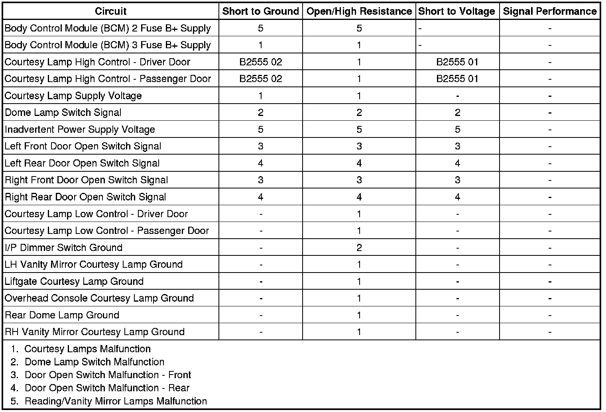

Courtesy Lamps Malfunction
Courtesy Lamps Malfunction
Diagnostic Instructions
* Perform the Diagnostic System Check - Vehicle (Initial Inspection and Diagnostic Overview) prior to using this diagnostic procedure.
* Review Strategy Based Diagnosis (Initial Inspection and Diagnostic Overview) for an overview of the diagnostic approach.
* Diagnostic Procedure Instructions (Initial Inspection and Diagnostic Overview) provides an overview of each diagnostic category.
Diagnostic Fault Information

Circuit/System Description
The BCM 3 fuse supplies battery voltage to the body control module (BCM). The BCM applies battery voltage to the courtesy lamps through the courtesy lamp supply voltage circuit. When any door is opened, the jam switch contacts close and the BCM receives a door-open input. If the BCM receives a door lock or unlock input or a rear hatch open input, the BCM will activate the courtesy lamp supply voltage circuit, providing battery voltage to all of the instrument panel (I/P) courtesy lamps, rearview mirror lamps, and rear compartment lamps. The courtesy lamps can be manually activated by placing the interior lamp switch in the DOME position. The BCM also provides a class 2 serial data message to the driver door module (DDM) and passenger door module (PDM) to apply battery voltage to the courtesy lamps located on each door.
Reference Information
Schematic Reference
Interior Lights Schematics (Interior Lights Schematics)
Connector End View Reference
Component Connector End Views (Connector Views)
Description and Operation
Interior Lighting Systems Description and Operation (Interior Lighting Systems Description and Operation)
Electrical Information Reference
* Circuit Testing (Component Tests and General Diagnostics)
* Connector Repairs (Component Tests and General Diagnostics)
* Testing for Intermittent Conditions and Poor Connections (Component Tests and General Diagnostics)
* Wiring Repairs (Component Tests and General Diagnostics)
Scan Tool Reference
Control Module References (Programming and Relearning)
Circuit/System Verification
1. Ignition ON, observe the scan tool ctsy. lamp actv. reason parameter while pressing and releasing the dome lamp switch. The reading should toggle between OFF and MANUAL.
• If the reading does not change between the commanded states, refer to Dome Lamp Switch Malfunction.
2. Observe the scan tool driver door open switch parameter while opening and closing the driver door. The reading should toggle between ACTIVE and INACTIVE.
• If the reading does not change between the commanded states, refer to Door Open Switch Malfunction - Front.
3. Observe the scan tool passenger door open switch parameter while opening and closing the passenger door. The reading should toggle between ACTIVE and INACTIVE.
• If the reading does not change between the commanded states, refer to Door Open Switch Malfunction - Front.
4. Open each rear door one at a time and observe the courtesy lamps. The courtesy lamps should illuminated when each rear door is opened.
• If the courtesy lamps do not illuminate as each rear door is opened, refer to Door Open Switch Malfunction - Rear.
Circuit/System Testing
Courtesy Lamps Malfunction - All
1. Ignition OFF, disconnect the X4 harness connector at the BCM.
2. Ignition ON, verify that a test lamp illuminates between the BCM 3 fuse voltage supply circuit terminal 2 and ground.
• If the test lamp does not illuminate, test the voltage supply circuit for a short to ground or an open/high resistance.
3. Ignition OFF, reconnect the X4 harness connector at the BCM.
4. Ignition OFF, disconnect the harness connector at the left footwell courtesy lamp.
5. Ignition OFF, test for less than 1.0 ohm between the ground circuit terminal B and ground.
• If greater than the specified range, test the ground for an open/high resistance.
6. Connect a test lamp between the courtesy lamp supply voltage circuit terminal A and the ground circuit terminal B.
7. Command the courtesy lamps ON and OFF with a scan tool. The test lamp should turn ON and OFF when changing between the commanded states.
• If the test lamp is always OFF, test the courtesy lamp supply voltage circuit for a short to ground or an open/high resistance. If the circuit tests normal, replace the BCM.
• If the test lamp is always ON, test the courtesy lamp supply voltage circuit for a short to voltage. If the circuit tests normal, replace the BCM.
8. Ignition OFF, disconnect the harness connector at the right footwell courtesy lamp.
9. Ignition OFF, test for less than 1.0 ohm between the ground circuit terminal B and ground.
• If greater than the specified range, test the ground for an open/high resistance.
10. Connect a test lamp between the courtesy lamp supply voltage circuit terminal A and the ground circuit terminal B.
11. Command the courtesy lamps ON and OFF with a scan tool. The test lamp should turn ON and OFF when changing between the commanded states.
• If the test lamp is always OFF, test the courtesy lamp supply voltage circuit for a short to ground or an open/high resistance. If the circuit tests normal, replace the BCM.
• If the test lamp is always ON, test the courtesy lamp supply voltage circuit for a short to voltage. If the circuit tests normal, replace the BCM.
Door Courtesy Lamp Malfunction
1. Ignition OFF, disconnect the harness connector at the appropriate door courtesy lamp.
2. Ignition OFF, scan tool OFF, doors CLOSED, interior lamps OFF, test for less than 5.0 ohms between the low control circuit and ground.
• If greater than the specified range, test the low control circuit for a short to voltage or an open/high resistance. If the circuit tests normal, replace the appropriate door control module.
3. Connect a test lamp between the high control circuit and the low control circuit.
4. Command the puddle/courtesy lamp ON and OFF with a scan tool. The test lamp should turn ON and OFF when changing between the commanded states.
• If the test lamp is always ON, test the high control circuit for a short to voltage. If the circuit tests normal, replace the appropriate door control module.
• If the test lamp is always OFF, test the high control circuit for a short to ground or an open/high resistance. If the circuit tests normal, replace the appropriate door control module.
5. If all circuits test normal, test or replace the appropriate door courtesy lamp.
Dome Lamp Switch Malfunction
1. Ignition OFF, disconnect the harness connector at the I/P dimmer switch.
2. Ignition OFF, verify that a test lamp illuminates between B+ and the ground circuit terminal 7.
• If the test lamp does not illuminate, test the ground circuit for an open/high resistance.
3. Ignition ON, verify the scan tool ctsy. lamp actv. reason parameter is OFF.
• If not the specified value, test the signal circuit terminal 8 for a short to ground. If the circuit tests normal, replace the BCM.
4. Install a 3A fused jumper wire between the signal circuit terminal 8 and ground. Verify the scan tool ctsy. lamp actv. reason parameter is MANUAL.
• If not the specified value, test the signal circuit for a short to voltage or an open/high resistance. If the circuit tests normal, replace the BCM.
5. If all circuits test normal, test or replace the I/P dimmer switch.
Door Open Switch Malfunction - Front
1. Ignition OFF, disconnect the harness connector at the inoperative door latch assembly.
2. Ignition OFF, interior lamps OFF, doors CLOSED, test for less than 5.0 ohms between the ground circuit and ground.
• If greater than the specified range, test the ground circuit for an open/high resistance.
3. Ignition ON, verify the scan tool door open switch parameter is INACTIVE.
• If the scan tool displays ACTIVE, test the signal circuit for a short to ground. If the circuit tests normal, replace the appropriate door control module.
4. Install a 3A fused jumper wire between the signal circuit and ground. Verify the scan tool door open switch parameter is ACTIVE.
• If not the specified value, test the signal circuit for a short to voltage or an open/high resistance. If the circuit tests normal, replace the appropriate door control module.
5. If all circuits test normal, test or replace the inoperative door latch assembly.
Door Open Switch Malfunction - Rear
1. Ignition OFF, disconnect the harness connector at the inoperative rear door latch assembly.
2. Ignition OFF, scan tool OFF, test for less than 5.0 ohms between the ground circuit and ground.
• If greater than the specified range, test the ground circuit for an open/high resistance.
3. Ignition ON, connect a test lamp between ground and the door open signal circuit. The test lamp should illuminate.
• If the test lamp does not illuminate, test the signal circuit for a short to ground or an open/high resistance. If the circuit tests normal, replace the BCM.
4. Install a 3A fused jumper wire between the signal circuit and ground. Verify the courtesy lamps illuminate.
• If the courtesy lamps do not illuminate, test the signal circuit for a short to voltage. If the circuit tests normal, replace the BCM.
5. If all circuits test normal, test or replace the inoperative rear door latch assembly.
Footwell Courtesy Lamp Malfunction
1. Ignition OFF, disconnect the harness connector at the footwell courtesy lamp.
2. Ignition OFF, test for less than 1.0 ohm between the ground circuit terminal B and ground.
• If greater than the specified range, test the ground for an open/high resistance.
3. Connect a test lamp between the courtesy lamp supply voltage circuit terminal A and the ground circuit terminal B.
4. Command the courtesy lamps ON and OFF with a scan tool. The test lamp should turn ON and OFF when changing between the commanded states.
• If the test lamp is always OFF, test the courtesy lamp supply voltage circuit for a short to ground or an open/high resistance. If the circuit tests normal, replace the BCM.
• If the test lamp is always ON, test the courtesy lamp supply voltage circuit for a short to voltage. If the circuit tests normal, replace the BCM.
5. If all circuits test normal, replace the inoperative footwell courtesy lamp.
Liftgate Courtesy Lamp Malfunction
1. Ignition OFF, disconnect the harness connector at the liftgate courtesy lamp.
2. Open the liftgate.
3. Ignition OFF, exterior lamps OFF, test for less than 5.0 ohms between the ground circuit terminal B and ground.
• If greater than the specified range, test the ground circuit for an open/high resistance.
4. Ignition OFF, connect a test lamp between the courtesy lamp supply voltage circuit terminal A and ground.
5. Command the courtesy lamps ON and OFF with a scan tool. The test lamp should turn ON and OFF when changing between the commanded states.
• If the test lamp is always OFF, test the courtesy lamp supply voltage circuit for a short to ground or an open/high resistance. If the circuit tests normal, replace the BCM.
• If the test lamp is always ON, test the courtesy lamp supply voltage circuit for a short to voltage. If the circuit tests normal, replace the BCM.
6. If all circuits test normal, replace the liftgate courtesy lamp.
Overhead Console Courtesy Lamp Malfunction - Front or Middle
1. Ignition OFF, disconnect the harness connector at the inoperative overhead console lamp assembly.
2. Ignition OFF, scan tool OFF, doors CLOSED, interior lamps OFF, test for less than 1.0 ohm between the ground circuit terminal 3 and ground.
• If greater than the specified range, test the ground circuit for an open/high resistance.
3. Ignition OFF, connect a test lamp between the courtesy lamp supply voltage circuit terminal 1 and the ground circuit terminal 3.
4. Command the courtesy lamps ON and OFF with a scan tool. The test lamp should turn ON and OFF when changing between the commanded states.
• If the test lamp is always OFF, test the courtesy lamp supply voltage circuit for a short to ground or an open/high resistance. If the circuit tests normal, replace the BCM.
• If the test lamp is always ON, test the courtesy lamp supply voltage circuit for a short to voltage. If the circuit tests normal, replace the BCM.
5. If all circuits test normal, replace the inoperative overhead console lamp assembly.
Rear Dome Lamp Malfunction
1. Ignition OFF, disconnect the harness connector at the rear dome lamp assembly.
2. Ignition OFF, scan tool OFF, doors CLOSED, interior lamps OFF, test for less than 1.0 ohm between the ground circuit terminal B and ground.
• If greater than the specified range, test the ground circuit for an open/high resistance.
3. Ignition OFF, connect a test lamp between the courtesy lamp supply voltage circuit terminal A and the ground circuit terminal B.
4. Command the courtesy lamps ON and OFF with a scan tool. The test lamp should turn ON and OFF when changing between the commanded states.
• If the test lamp is always OFF, test the courtesy lamp supply voltage circuit for a short to ground or an open/high resistance. If the circuit tests normal, replace the BCM.
• If the test lamp is always ON, test the courtesy lamp supply voltage circuit for a short to voltage. If the circuit tests normal, replace the BCM.
5. If all circuits test normal, replace the rear dome lamp assembly.
Reading/Vanity Mirror Lamps Malfunction
1. Ignition OFF, disconnect the X3 harness connector at the BCM.
2. Ignition ON, verify that a test lamp illuminates between the BCM 2 fuse voltage supply circuit terminal 2 and ground.
• If the test lamp does not illuminate, test the voltage supply circuit for a short to ground or an open/high resistance.
3. Ignition OFF, reconnect the X3 harness connector at the BCM.
4. Ignition OFF, disconnect the harness connector at the inoperative vanity mirror.
5. Ignition OFF, scan tool OFF, interior lamps OFF, test for less than 1.0 ohm between the ground circuit terminal A and ground.
• If greater than the specified range, test the ground circuit for an open/high resistance.
6. Ignition ON, verify that a test lamp illuminates between the inadvertent courtesy lamp control circuit terminal B and ground.
• If the test lamp does not illuminate, test the inadvertent courtesy lamp control circuit for a short to ground or an open/high resistance. If the circuit tests normal, replace the BCM.
7. If all circuits test normal, replace the inoperative vanity mirror.
Repair Instructions
Perform the Diagnostic Repair Verification (Verification Tests) after completing the diagnostic procedure.
* Cargo Lamp Replacement (Cargo Lamp Replacement)
* Dome Lamp Replacement (Dome Lamp Replacement)
* Vanity Mirror Lamp Replacement (Service and Repair)
* Instrument Panel Lamp Dimmer Switch Replacement (Left Hand Drive) (Instrument Panel Lamp Dimmer Switch Replacement (Left Hand Drive))Instrument Panel Lamp Dimmer Switch Replacement (Right Hand Drive) (Instrument Panel Lamp Dimmer Switch Replacement (Right Hand Drive))
* Overhead Console Courtesy Lamp Replacement (Overhead Console Courtesy Lamp Replacement)
* Instrument Panel Courtesy Lamp Bulb Replacement - Left Side (Left Hand Drive) (Instrument Panel Courtesy Lamp Bulb Replacement - Left Side (Left Hand Drive))Instrument Panel Courtesy Lamp Bulb Replacement - Left Side (Right Hand Drive) (Instrument Panel Courtesy Lamp Bulb Replacement - Left Side (Right Hand Drive))
* Instrument Panel Courtesy Lamp Bulb Replacement - Right Side (Left Hand Drive) (Instrument Panel Courtesy Lamp Bulb Replacement - Right Side (Left Hand Drive))Instrument Panel Courtesy Lamp Bulb Replacement - Right Side (Right Hand Drive) (Instrument Panel Courtesy Lamp Bulb Replacement - Right Side (Right Hand Drive))
* Rear Liftgate Lamp Replacement (Service and Repair)
* Control Module References (Programming and Relearning) for BCM, DDM, or PDM replacement, setup, and programming